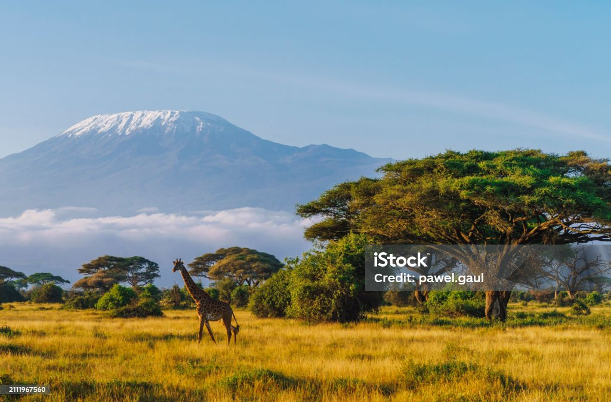

A kontinens a Föld nagy, összefüggő szárazföldi területe. A Földön hét kontinenst különböztetünk meg: Európát, Ázsiát, Afrikát, Észak-Amerikát, Dél-Amerikát, Ausztráliát és az Antarktiszt.

A világ leghosszabb folyója A Nílus mintegy 6650 kilométer hosszan kanyarog észak felé a Földközi-tengerig. A folyó tizenegy ország területét érinti útközben.
Tudj meg többetÉghajlat: Nagyrészt a forró égövben fekszik, ezért az éghajlata túlnyomórészt meleg, a sivatagitól a trópusi esőerdőkig terjedő zónákkal.
Népesség. A kontinensen közel 1,59 milliárd ember él, ami a világ össznépességének körülbelül 19 százaléka.
| Kontinens | Egy ország | Egy jellemző állat |
|---|---|---|
| Afrika | Nigéria | Afrikai elefánt |
| Ázsia | Japán | Óriáspanda |
| Dél-Amerika | Argentína | Nandu |